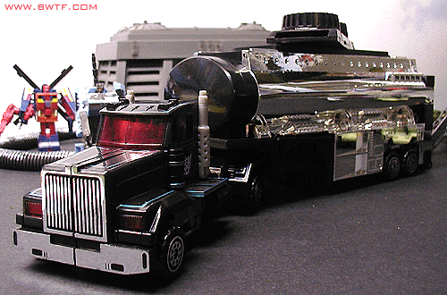
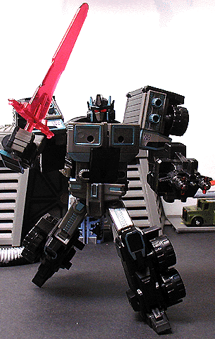
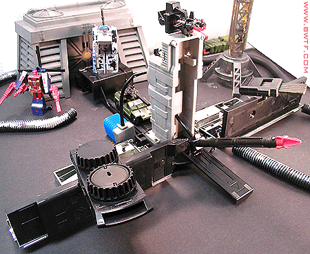

Allegiance
: Decepticon
Size
: Super
Difficulty of Transformation
: Easy
Japanese Name
: Black Convoy
Color Scheme
: Sparkly black, chrome
silver, dark transparent red, metallic teal, gray, light gray, and some
light blue, flat black, and flat red
Mold History
: Scourge's mold was
first used for the Laser Optimus Prime toy, in the Generation 2 line back
in 1995.
Rating
: 9.5

Scourge's vehicle mode
is a tanker truck. This mode is VERY nice all around, especially the nice
chrome tanker. And the chrome doesn't chip at all, which is a surprise.
The black, silver, and red colors scheme of Scourge is very fitting for
an "evil Prime" character, and the tea helps break any monotony the black
might have had. The Decepticon symbols on the doors are another nice touch.
Unlike most other "realistic vehicle" Transformers, Scourge has a weapon
in this mode; the "smokestacks" on the top of the tanker part is actually
a disc-firing mechanism. Twist the dial, and the disks fire out one by
one. It has no top, though, so be careful if you turn Scourge on his side
or on his back, as his disks will fall out. This mode is very realistically
proportioned as well, except for one thing; Scourge's robot feet are clearly
visibie if you seperate the truck part from the tanker part. Other than
that, this mode is absolutely FLAWLESS. One might notice the button on
the top of Scourge's truck part, and that it does nothing. This is because
Scourge's original mold, Laser Optimus Prime, had an electronics feature
that was taken out for this toy. Can't say I really mind, as Scourge doesn't
need accidentally-activated sound gimmicks to be cool.


Scourge's robot mode
is flawless. Totally and completely. Well, okay, if his shoulders are turned
back, it looks slightly odd, but that's REALLY nitpickinmg. For such a
large Transformer, he has a pretty simple transformation, too, but it's
effective. He definitely captures the "evil Prime" look, and his glowing
eyes are very nice, as is his "Sword of Fury" and gun. The sword's a bit
dull, though, as it was modified a bit for the new U.S. safety standards.
Bah. Anyway, Scourge is also very nicely detailed in this mode, the teal
really bring out a lot in him. He's also very, VERY posable- with the exception
of the hands, every other humanly movable part on Scourge can move. Waist,
head, shoulders, elbows, knees, you name it. And he's pretty stable, too,
allowing for TONS of great poses. Definitely one of the greatest robot
modes ever.
Scourge's "base" looks
a bit too much like an unfolded tanker, true, but it's the best "trailer-bases"
of all the Primes. Why, you ask? The INSANE amount of weaponry. included.
Besides the five discs in the disc launcher, two air-pressure-launched
missiles and a whopping TEN spring-loaded missiles are included. This gives
Scourge some of the most ammunition out of any Transformer. BARRAGE ATTACK!
Heheh.
Scourge is an excellent
toy, all around. Great vehicle mode, INSANELY good robot mode, and a base
packed full with weaponry. I guess my only real complaints would be the
obviousness of his feet in truck mode, and the fact that he can't combine
with his tanker trailer. Definitely a must-buy toy.
Review by Beastbot
(NOTE: As noted above, Scourge is a Toys "R" Us Exclusive, and only available at those stores. Also, for some odd reason, the Scourge pictured above did not come with silver-and-black chest stickers. He's supposed too, though.)